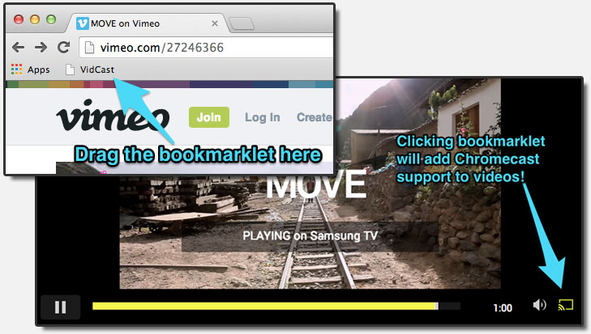

VidCast
: Video to Chromecast
Tweet
The address to VidCast has changed. Please update your bookmarklet.
Enter the URL of any video/image:
This works only on
Chrome
. See
supported media
.
Works with:
Vimeo
,
TED
, and direct streaming links..

Need an example? Visit this
video on Vimeo
and then click on the bookmarklet.
IDLE
IDLE
00:00:00
← Go back